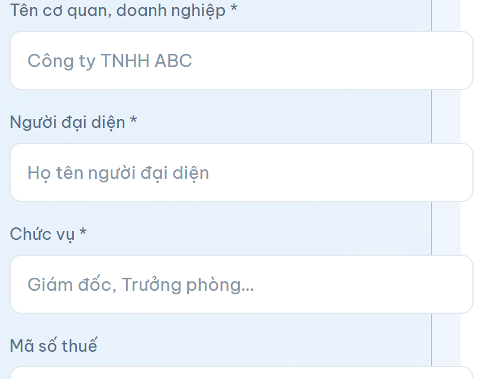
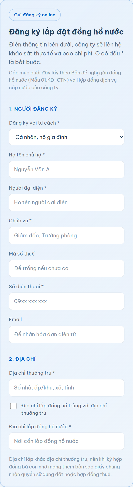

Chuyện thường gặp: nhà vừa xây xong, còn xài nước giếng hoặc xin nhờ nhà bên cạnh. Bà con muốn có nước máy nhưng ngại vì không biết thủ tục lắp đồng hồ nước gồm những gì.
Thực tế thủ tục gọn hơn nhiều người nghĩ. Hồ sơ ba loại giấy tờ. Quy trình bốn bước. Bước nộp hồ sơ làm online được, không cần tới quầy. Thời gian giải quyết là 20 ngày làm việc kể từ khi hồ sơ hợp lệ.
Điều kiện chỉ có một: nhà hoặc cơ sở nằm trong khu vực có mạng lưới cấp nước của công ty. Có đường ống chạy tới khu vực đó là đăng ký được.
Công ty TNHH Cấp Thoát Nước Mỏ Cày hiện phục vụ 6 xã khu vực Mỏ Cày, với 03 nhà máy nước và mạng lưới 623 km đường ống.
Người đứng tên đăng ký là chủ hộ, hoặc người đại diện hợp pháp của hộ gia đình, cơ quan, cơ sở sản xuất kinh doanh. Khi đăng ký, khách hàng chọn nhóm đối tượng sử dụng, vì đơn giá nước khác nhau theo nhóm:
Chọn đúng nhóm ngay từ đầu để sau này hóa đơn tính đúng giá. Cần biết đơn giá từng nhóm, khách hàng gọi tổng đài (0275) 3662 893 để nhân viên báo mức đang áp dụng.
Nhà thuê hoặc nhà trọ. Người đứng tên hợp đồng nên là chủ nhà, vì hợp đồng gắn với địa điểm sử dụng nước chứ không gắn với người ở.

Hồ sơ lắp đặt đồng hồ nước gồm ba loại giấy tờ. Không nhiều, nhưng thiếu một thứ là hồ sơ chưa hợp lệ, đồng hồ đếm 20 ngày làm việc chưa bắt đầu chạy.
| Giấy tờ | Nội dung | Lưu ý khi chuẩn bị |
|---|---|---|
| Giấy đề nghị lắp đặt | Theo mẫu của công ty, có ở mục Biểu mẫu trên website | Ghi rõ họ tên, số điện thoại, địa chỉ lắp đặt, nhóm đối tượng |
| Bản sao giấy tờ tùy thân | Của chủ hộ hoặc người đại diện đứng tên hợp đồng | Tên trên giấy tờ phải trùng với tên ghi trong giấy đề nghị |
| Giấy tờ liên quan đến địa điểm sử dụng nước | Chứng minh quyền sử dụng hợp pháp địa điểm xin lắp nước | Địa chỉ ghi trong giấy tờ phải khớp với địa chỉ xin lắp đồng hồ |
Ba điểm bà con hay vướng:
Toàn bộ thủ tục lắp đồng hồ nước đi qua bốn bước. Khách hàng chỉ chủ động ở bước 1 và bước 3, hai bước còn lại do công ty làm.
Nộp trực tiếp tại văn phòng công ty ở Ấp Phú Quới, Xã Mỏ Cày, tỉnh Vĩnh Long, trong giờ làm việc. Hoặc gửi online qua biểu mẫu trên website, nói kỹ ở mục 4.
Nhân viên công ty tới tận nơi xem vị trí đặt đồng hồ, đo khoảng cách từ nhà tới tuyến ống gần nhất, xem đường đi của ống nhánh có vướng gì không. Khảo sát xong, công ty báo chi phí cụ thể cho khách hàng.
Bà con nên có mặt lúc khảo sát để thống nhất vị trí đặt đồng hồ: nơi dễ đọc chỉ số, không bị che khuất, không nằm chỗ xe cộ hay chạy qua.
Đồng ý với chi phí đã báo thì ký hợp đồng cấp nước và nộp phí theo bảng phí hiện hành. Hợp đồng ghi rõ tên khách hàng, địa điểm sử dụng và nhóm đối tượng. Bà con giữ một bản, vì trên đó có mã khách hàng dùng về sau.
Công ty thi công đấu nối từ tuyến ống vào nhà, lắp đồng hồ, kiểm tra rò rỉ rồi mở nước. Từ lúc này chỉ số đồng hồ bắt đầu được ghi theo kỳ.
| Bước | Ai làm | Kết quả |
|---|---|---|
| 1. Nộp hồ sơ | Khách hàng | Hồ sơ được tiếp nhận |
| 2. Khảo sát, báo chi phí | Công ty | Biết rõ số tiền phải nộp |
| 3. Ký hợp đồng, nộp phí | Hai bên | Hợp đồng có hiệu lực |
| 4. Thi công, cấp nước | Công ty | Đồng hồ hoạt động, nhà có nước |

Bước nộp hồ sơ làm online được. Bà con vào trang Cấp nước trên website mocaywaco.com, kéo tới mục Đăng ký lắp đặt đồng hồ nước, điền biểu mẫu rồi bấm gửi.
Biểu mẫu hỏi những thông tin sau:
Gửi xong, công ty tiếp nhận và liên hệ lại để hẹn khảo sát. Bản gốc giấy tờ nộp sau, lúc khảo sát hoặc lúc ký hợp đồng, nên bà con không phải chạy ra chạy vào nhiều lần.
Muốn hỏi trước khi đăng ký thì gọi tổng đài chăm sóc khách hàng (0275) 3662 893, từ thứ 2 tới thứ 7, sáng 7h tới 11h, chiều 13h tới 17h.
Gửi đăng ký ngoài giờ vẫn được. Biểu mẫu online nhận thông tin 24/7, công ty gọi lại trong giờ làm việc gần nhất. Số báo sự cố (0275) 3843 993 trực 24/7 nhưng dành cho sự cố nước, không dùng để đăng ký lắp đặt.
Thời gian giải quyết là 20 ngày làm việc kể từ khi hồ sơ hợp lệ. Hai chữ quan trọng trong câu này là "ngày làm việc" và "hợp lệ".
Ngày làm việc không tính Chủ nhật và ngày nghỉ lễ. Công ty làm từ thứ 2 tới thứ 7, nên 20 ngày làm việc trên lịch thực tế dài hơn 20 ngày thường vài ngày.
Hồ sơ hợp lệ nghĩa là đủ ba loại giấy tờ, thông tin khớp nhau. Hồ sơ còn thiếu thì mốc đếm bắt đầu từ khi bổ sung xong, không phải từ ngày nộp lần đầu.
Trong 20 ngày đó, công ty làm cả khảo sát, báo chi phí, ký hợp đồng và thi công. Đây là mức trần, không phải thời gian bắt buộc phải chờ đủ.
Chi phí tính theo bảng phí hiện hành của công ty, và chỉ xác định được con số cuối cùng sau khi khảo sát thực tế. Website không đăng một mức giá chung, vì mỗi nhà một khoảng cách, một điều kiện thi công.
Những yếu tố làm chi phí mỗi nhà mỗi khác:
Việc báo chi phí nằm ở bước 2, tức là trước khi ký hợp đồng. Bà con biết rõ số tiền rồi mới quyết định, không có chuyện thi công xong mới báo giá.
Chi phí lắp đặt là khoản trả một lần. Sau đó hằng tháng chỉ trả tiền nước theo số mét khối đã dùng, xem cách tính tại bài cách tính tiền nước sinh hoạt.
Nhà nằm cuối con đường nhỏ, hoặc trong khu chưa có nhiều hộ dùng nước máy, thường lo một câu: liệu có kéo tới được không. Câu trả lời chỉ có sau khảo sát thực tế. Nhưng bà con nên cứ gửi đăng ký, vì ba lý do:
Vài nhà gần nhau cùng muốn có nước máy thì nên rủ nhau đăng ký cùng đợt, ghi vào ô Ghi chú rằng khu vực có nhiều hộ cùng nhu cầu.
Có nước rồi thì còn ba việc nhỏ nhưng nên nhớ.
Sau khi lắp, mỗi hộ có một mã khách hàng riêng, in trên hợp đồng và trên hóa đơn. Công ty dùng mã này để ghi chỉ số, lập hóa đơn và đối soát tiền.
Có mã là tra cứu tiền nước và thanh toán online được, không cần đăng ký tài khoản. Cách làm xem tại bài tra cứu tiền nước Mỏ Cày online. Nên lưu mã vào danh bạ điện thoại hoặc chụp hình hợp đồng để khỏi tìm lại.
Mặt đồng hồ có dãy số chỉ tổng lượng nước đã chảy qua, tính bằng mét khối. Bà con nhìn qua mỗi tháng một lần, ghi lại con số, so với số ghi trên hóa đơn.
Thói quen này giúp phát hiện sớm hai chuyện: hóa đơn sai lệch, và nhà có rò rỉ ngầm. Cách kiểm tra rò rỉ: khóa hết vòi trong nhà rồi nhìn kim hoặc bánh xe nhỏ trên mặt đồng hồ. Nếu vẫn quay thì có chỗ rò.
Đồng hồ nước thuộc trách nhiệm quản lý của công ty, nhưng đặt trong khuôn viên nhà bà con. Vài điều nên giữ:
Nghi đồng hồ chạy sai thì làm đơn đề nghị kiểm định, có mẫu ở mục Biểu mẫu trang Cấp nước. Nếu tiền nước tự dưng tăng vọt, xem thêm bài tiền nước tăng đột biến để loại trừ nguyên nhân trước.
Đổi chủ hộ thì làm sao. Bán nhà hoặc sang nhượng cơ sở thì nên làm thủ tục sang tên hợp đồng, có mẫu đơn ở mục Biểu mẫu. Sang tên rồi thì hóa đơn và mọi liên hệ mới đúng người.
20 ngày làm việc kể từ khi hồ sơ hợp lệ, gồm cả khảo sát, báo chi phí, ký hợp đồng và thi công.
Ba loại: giấy đề nghị lắp đặt theo mẫu của công ty, bản sao giấy tờ tùy thân của chủ hộ hoặc người đại diện, và giấy tờ liên quan đến địa điểm sử dụng nước.
Tính theo bảng phí hiện hành và xác định sau khi khảo sát thực tế, vì phụ thuộc khoảng cách tới đường ống và điều kiện thi công từng nhà. Khách hàng biết rõ số tiền trước khi ký hợp đồng.
Được. Điền biểu mẫu ở mục Đăng ký lắp đặt trên trang Cấp nước. Công ty nhận thông tin rồi liên hệ hẹn khảo sát. Giấy tờ bản gốc nộp sau.
Điều kiện là nhà nằm trong khu vực có mạng lưới cấp nước của công ty. Mạng lưới hiện dài 623 km, phục vụ 6 xã khu vực Mỏ Cày. Nhà ở xa vẫn nên gửi đăng ký để công ty khảo sát và trả lời rõ.
Hóa đơn phát sinh sau kỳ ghi chỉ số đầu tiên. Hộ vừa lắp đồng hồ tra cứu online chưa ra kết quả là bình thường, qua kỳ ghi số kế tiếp sẽ có.
Điền biểu mẫu, công ty gọi lại hẹn khảo sát và báo chi phí cụ thể.
Đăng ký lắp đặt →